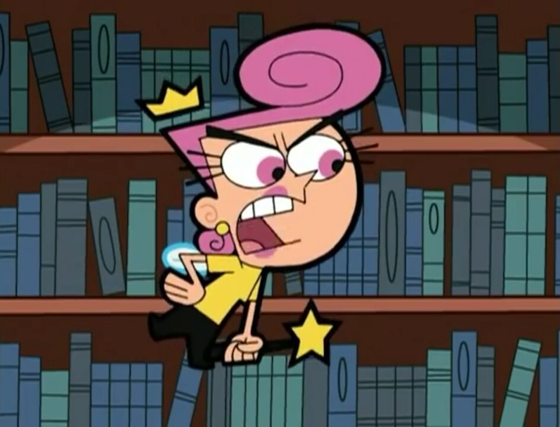
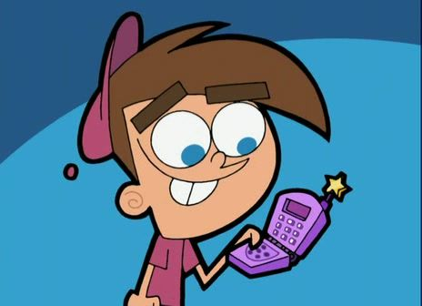
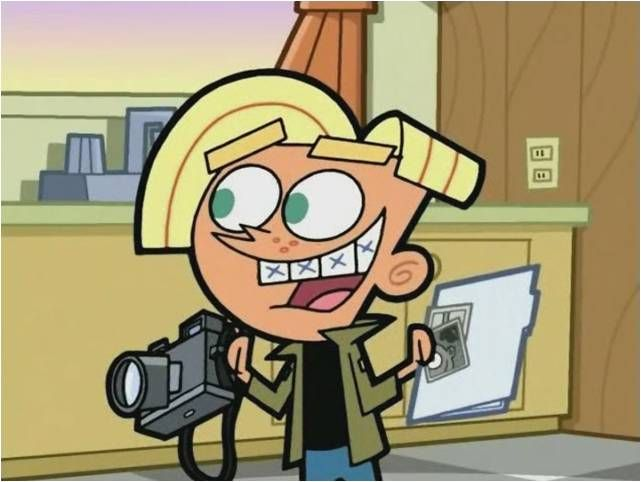
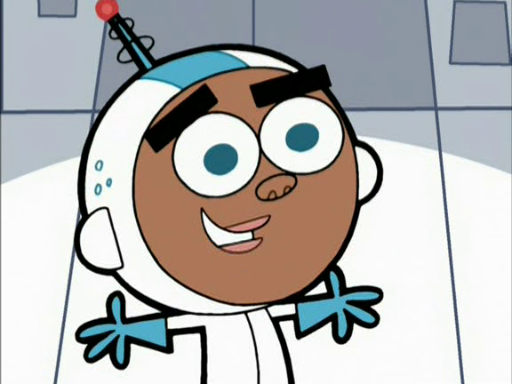
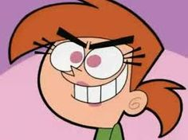
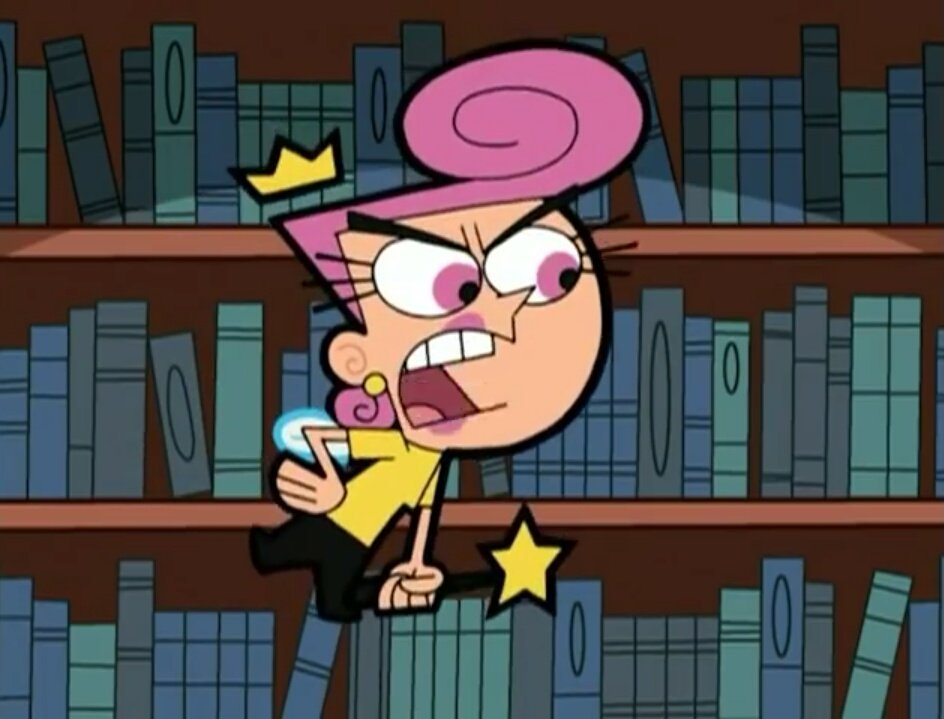
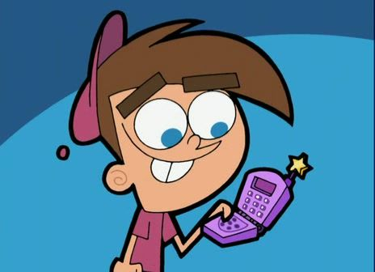
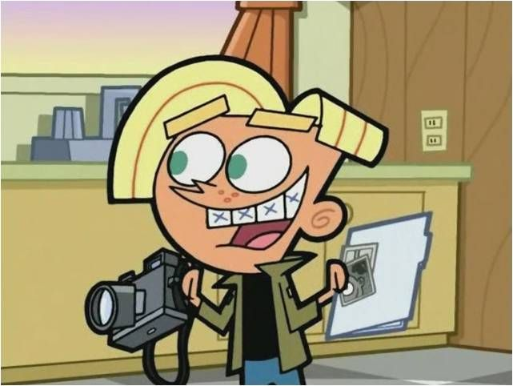
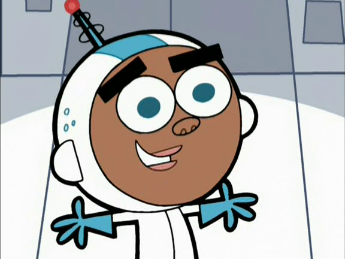
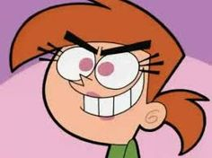

Intro
Los padrinos mágicos gira en torno a Timmy Turner, un niño de diez años que desea una vida perfecta. Desafortunadamente, sus padres trabajan a tiempo completo y con frecuencia le descuidan y
le dejan a cuidados de una niñera malvada, Vicky, que se deleita atormentándolo.
 








